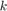
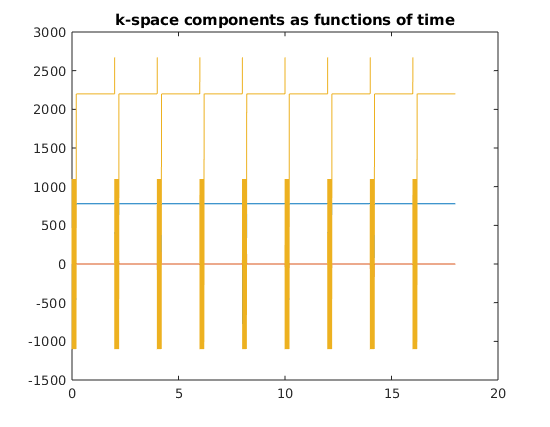
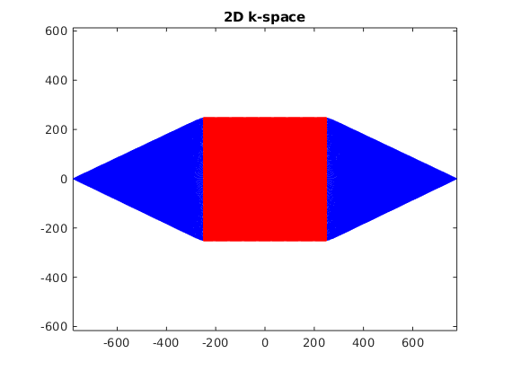
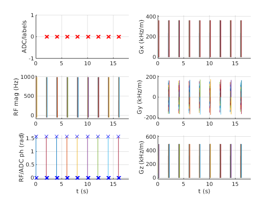

Create a TSE sequence and export for execution
The Sequence class provides functionality to create magnetic resonance sequences (MRI or NMR) from basic building blocks.
This provides an implementation of the open file format for MR sequences described here: http://pulseq.github.io/specification.pdf
This example performs the following steps:
- Create slice selective RF pulse for imaging.
- Create readout gradient and phase encode strategy.
- Loop through phase encoding and generate sequence blocks.
- Write the sequence to an open file format suitable for execution on a scanner.
Juergen Hennig <juergen.hennig@uniklinik-freiburg.de> Maxim Zaitsev <maxim.zaitsev@uniklinik-freiburg.de>
Contents
- Instantiation and gradient limits
- Sequence events
- Base gradients
- Slice selection
- Readout gradient
- Phase encoding
- split gradients and recombine into blocks
- Define sequence blocks
- check whether the timing of the sequence is correct
- k-space trajectory calculation
- very optional slow step, but useful for testing during development e.g. for the real TE, TR or for staying within slew rate limits
- Write to file
Instantiation and gradient limits
The system gradient limits can be specified in various units mT/m, Hz/cm, or Hz/m. However the limits will be stored internally in units of Hz/m for amplitude and Hz/m/s for slew. Unspecificied hardware parameters will be assigned default values.
system = mr.opts('MaxGrad', 30, 'GradUnit', 'mT/m', ... 'MaxSlew', 170, 'SlewUnit', 'T/m/s', 'rfRingdownTime', 100e-6, ... 'rfDeadTime', 100e-6, 'adcDeadTime', 10e-6);
A new sequence object is created by calling the class constructor.
seq=mr.Sequence(system);
Sequence events
Some sequence parameters are defined using standard MATLAB variables
fov=256e-3; Nx=128; Ny=128; necho=16; Nslices=1; rflip=180; if (numel(rflip)==1), rflip=rflip+zeros([1 necho]); end sliceThickness=5e-3; TE1=12e-3; % echo time of the first echo in the train TR=2000e-3; TEeff=100e-3; % the desired echo time (can only be achieved approximately) samplingTime= 6.4e-3; readoutTime = samplingTime + 2*system.adcDeadTime; tEx=2.5e-3; tExwd=tEx+system.rfRingdownTime+system.rfDeadTime; tRef=2e-3; tRefwd=tRef+system.rfRingdownTime+system.rfDeadTime; tSp=0.5*(TE1-readoutTime-tRefwd); tSpex=0.5*(TE1-tExwd-tRefwd); fspR=1.0; fspS=0.5; dG=250e-6; % 'standard' ramp time - makes sequence structure much simpler rfex_phase=pi/2; % MZ: we need to maintain these as variables because we will overwrtite phase offsets for multiple slice positions rfref_phase=0;
Base gradients
Slice selection
Key concepts in the sequence description are blocks and events. Blocks describe a group of events that are executed simultaneously. This hierarchical structure means that one event can be used in multiple blocks, a common occurrence in MR sequences, particularly in imaging sequences.
First, the slice selective RF pulses (and corresponding slice gradient) are generated using the makeSincPulse function. Gradients are recalculated such that their flattime covers the pulse plus the rfdead- and rfringdown- times.
flipex=90*pi/180; [rfex, gz] = mr.makeSincPulse(flipex,system,'Duration',tEx,... 'SliceThickness',sliceThickness,'apodization',0.5,'timeBwProduct',4,'PhaseOffset',rfex_phase); GSex = mr.makeTrapezoid('z',system,'amplitude',gz.amplitude,'FlatTime',tExwd,'riseTime',dG); % plotPulse(rfex,GSex); flipref=rflip(1)*pi/180; [rfref, gz2] = mr.makeSincPulse(flipref,system,'Duration',tRef,... % it was a bug as 'gz' was owerwritten 'SliceThickness',sliceThickness,'apodization',0.5,'timeBwProduct',4,'PhaseOffset',rfref_phase,'use','refocusing'); GSref = mr.makeTrapezoid('z',system,'amplitude',GSex.amplitude,'FlatTime',tRefwd,'riseTime',dG); % plotPulse(rfref,GSref); AGSex=GSex.area/2; GSspr = mr.makeTrapezoid('z',system,'area',AGSex*(1+fspS),'duration',tSp,'riseTime',dG); GSspex = mr.makeTrapezoid('z',system,'area',AGSex*fspS,'duration',tSpex,'riseTime',dG);
Warning: WARNING: system maximum RF amplitude exceeded (116.0%)
Readout gradient
To define the remaining encoding gradients we need to calculate the -space sampling. The Fourier relationship
Therefore the area of the readout gradient is .
deltak=1/fov; kWidth = Nx*deltak; GRacq = mr.makeTrapezoid('x',system,'FlatArea',kWidth,'FlatTime',readoutTime,'riseTime',dG); adc = mr.makeAdc(Nx,'Duration',samplingTime, 'Delay', system.adcDeadTime);%,'Delay',GRacq.riseTime); GRspr = mr.makeTrapezoid('x',system,'area',GRacq.area*fspR,'duration',tSp,'riseTime',dG); GRspex = mr.makeTrapezoid('x',system,'area',GRacq.area*(1+fspR),'duration',tSpex,'riseTime',dG); AGRspr=GRspr.area;%GRacq.area/2*fspR; AGRpreph = GRacq.area/2+AGRspr;%GRacq.area*(1+fspR)/2; GRpreph = mr.makeTrapezoid('x',system,'Area',AGRpreph,'duration',tSpex,'riseTime',dG);
Phase encoding
To move the -space trajectory away from 0 prior to the readout a prephasing gradient must be used. Furthermore rephasing of the slice select gradient is required.
nex=floor(Ny/necho); pe_steps=(1:(necho*nex))-0.5*necho*nex-1; if 0==mod(necho,2) pe_steps=circshift(pe_steps,[0,-round(nex/2)]); % for odd number of echoes we have to apply a shift to avoid a contrast jump at k=0 end % TSE echo time magic [~,iPEmin]=min(abs(pe_steps)); k0curr=floor((iPEmin-1)/nex)+1; % calculate the 'native' central echo index k0prescr=max(round(TEeff/TE1),1); % echo to be aligned to the k-space center PEorder=circshift(reshape(pe_steps,[nex,necho])',k0prescr-k0curr); phaseAreas = PEorder*deltak;
split gradients and recombine into blocks
lets start with slice selection....
GS1times=[0 GSex.riseTime]; GS1amp=[0 GSex.amplitude]; GS1 = mr.makeExtendedTrapezoid('z','times',GS1times,'amplitudes',GS1amp); GS2times=[0 GSex.flatTime]; GS2amp=[GSex.amplitude GSex.amplitude]; GS2 = mr.makeExtendedTrapezoid('z','times',GS2times,'amplitudes',GS2amp); GS3times=[0 GSspex.riseTime GSspex.riseTime+GSspex.flatTime GSspex.riseTime+GSspex.flatTime+GSspex.fallTime]; GS3amp=[GSex.amplitude GSspex.amplitude GSspex.amplitude GSref.amplitude]; GS3 = mr.makeExtendedTrapezoid('z','times',GS3times,'amplitudes',GS3amp); GS4times=[0 GSref.flatTime]; GS4amp=[GSref.amplitude GSref.amplitude]; GS4 = mr.makeExtendedTrapezoid('z','times',GS4times,'amplitudes',GS4amp); GS5times=[0 GSspr.riseTime GSspr.riseTime+GSspr.flatTime GSspr.riseTime+GSspr.flatTime+GSspr.fallTime]; GS5amp=[GSref.amplitude GSspr.amplitude GSspr.amplitude 0]; GS5 = mr.makeExtendedTrapezoid('z','times',GS5times,'amplitudes',GS5amp); GS7times=[0 GSspr.riseTime GSspr.riseTime+GSspr.flatTime GSspr.riseTime+GSspr.flatTime+GSspr.fallTime]; GS7amp=[0 GSspr.amplitude GSspr.amplitude GSref.amplitude]; GS7 = mr.makeExtendedTrapezoid('z','times',GS7times,'amplitudes',GS7amp); % and now the readout gradient.... GR3=GRpreph;%GRspex; GR5times=[0 GRspr.riseTime GRspr.riseTime+GRspr.flatTime GRspr.riseTime+GRspr.flatTime+GRspr.fallTime]; GR5amp=[0 GRspr.amplitude GRspr.amplitude GRacq.amplitude]; GR5 = mr.makeExtendedTrapezoid('x','times',GR5times,'amplitudes',GR5amp); GR6times=[0 readoutTime]; GR6amp=[GRacq.amplitude GRacq.amplitude]; GR6 = mr.makeExtendedTrapezoid('x','times',GR6times,'amplitudes',GR6amp); GR7times=[0 GRspr.riseTime GRspr.riseTime+GRspr.flatTime GRspr.riseTime+GRspr.flatTime+GRspr.fallTime]; GR7amp=[GRacq.amplitude GRspr.amplitude GRspr.amplitude 0]; GR7 = mr.makeExtendedTrapezoid('x','times',GR7times,'amplitudes',GR7amp); % and filltimes %tex=GS1.t(end)+GS2.t(end)+GS3.t(end); %tref=GS4.t(end)+GS5.t(end)+GS7.t(end)+readoutTime; %tend=GS4.t(end)+GS5.t(end); tex=mr.calcDuration(GS1)+mr.calcDuration(GS2)+mr.calcDuration(GS3); tref=mr.calcDuration(GS4)+mr.calcDuration(GS5)+mr.calcDuration(GS7)+readoutTime; tend=mr.calcDuration(GS4)+mr.calcDuration(GS5); tETrain=tex+necho*tref+tend; TRfill=(TR-Nslices*tETrain)/Nslices; % round to gradient raster TRfill=system.gradRasterTime * round(TRfill / system.gradRasterTime); if TRfill<0, TRfill=1e-3; disp(strcat('Warning!!! TR too short, adapted to include all slices to : ',num2str(1000*Nslices*(tETrain+TRfill)),' ms')); else disp(strcat('TRfill : ',num2str(1000*TRfill),' ms')); end delayTR = mr.makeDelay(TRfill);
TRfill :1797.61 ms
Define sequence blocks
Next, the blocks are put together to form the sequence
for kex=0:nex % MZ: we start at 0 to have one dummy for s=1:Nslices rfex.freqOffset=GSex.amplitude*sliceThickness*(s-1-(Nslices-1)/2); rfref.freqOffset=GSref.amplitude*sliceThickness*(s-1-(Nslices-1)/2); rfex.phaseOffset=rfex_phase-2*pi*rfex.freqOffset*mr.calcRfCenter(rfex); % align the phase for off-center slices rfref.phaseOffset=rfref_phase-2*pi*rfref.freqOffset*mr.calcRfCenter(rfref); % dito seq.addBlock(GS1); seq.addBlock(GS2,rfex); seq.addBlock(GS3,GR3); %GS4.first=GS4f; %GS4.first=GS3.last; for kech=1:necho, if (kex>0) phaseArea=phaseAreas(kech,kex); else phaseArea=0; end GPpre = mr.makeTrapezoid('y',system,'Area',phaseArea,'Duration',tSp,'riseTime',dG); GPrew = mr.makeTrapezoid('y',system,'Area',-phaseArea,'Duration',tSp,'riseTime',dG); seq.addBlock(GS4,rfref); seq.addBlock(GS5,GR5,GPpre); if (kex>0) seq.addBlock(GR6,adc); else seq.addBlock(GR6); end seq.addBlock(GS7,GR7,GPrew); %GS4.first=GS7.last; end seq.addBlock(GS4); seq.addBlock(GS5); seq.addBlock(delayTR); end end
check whether the timing of the sequence is correct
[ok, error_report]=seq.checkTiming; if (ok) fprintf('Timing check passed successfully\n'); else fprintf('Timing check failed! Error listing follows:\n'); fprintf([error_report{:}]); fprintf('\n'); end
Timing check passed successfully
k-space trajectory calculation
[ktraj_adc, t_adc, ktraj, t_ktraj, t_excitation, t_refocusing] = seq.calculateKspacePP(); % plot k-spaces figure; plot(t_ktraj,ktraj'); title('k-space components as functions of time'); % plot the entire k-space trajectory figure; plot(ktraj(1,:),ktraj(2,:),'b',... ktraj_adc(1,:),ktraj_adc(2,:),'r.'); % a 2D plot axis('equal'); % enforce aspect ratio for the correct trajectory display title('2D k-space'); 
Display the first few lines of the output file s=fileread('myTSE.seq'); disp(s(1:300))
seq.plot();
very optional slow step, but useful for testing during development e.g. for the real TE, TR or for staying within slew rate limits
rep = seq.testReport;
fprintf([rep{:}]);
Number of blocks: 630 Number of events: RF: 153 Gx: 441 Gy: 288 Gz: 477 ADC: 128 Sequence duration: 18.000000s TE: 0.096000s TR: 2.000000s Flip angle: 90.00° Flip angle: 180.00° Unique k-space positions (a.k.a. columns, rows, etc): 128 Unique k-space positions (a.k.a. columns, rows, etc): 128 Dimensions: 2 Spatial resolution: 2.02 mm Spatial resolution: 2.00 mm Repetitions/slices/contrasts: 1 range: [1 1] 16384 k-space position(s) repeated 1 times Cartesian encoding trajectory detected Block timing check passed successfully Max. Gradient: 360743 Hz/m == 8.47 mT/m Max. Gradient: 173611 Hz/m == 4.08 mT/m Max. Gradient: 491667 Hz/m == 11.55 mT/m Max. Slew Rate: 1.44297e+09 Hz/m/s == 33.89 T/m/s Max. Slew Rate: 6.94444e+08 Hz/m/s == 16.31 T/m/s Max. Slew Rate: 1.96667e+09 Hz/m/s == 46.19 T/m/s Max. Absolute Gradient: 634045 Hz/m == 14.89 mT/m Max. Absolute Slew Rate: 2.3728e+09 Hz/m/s == 55.73 T/m/s
Write to file
% The sequence is written to file in compressed form according to the file % format specification using the |write| method. seq.write('tse.seq') % seq.install('siemens');